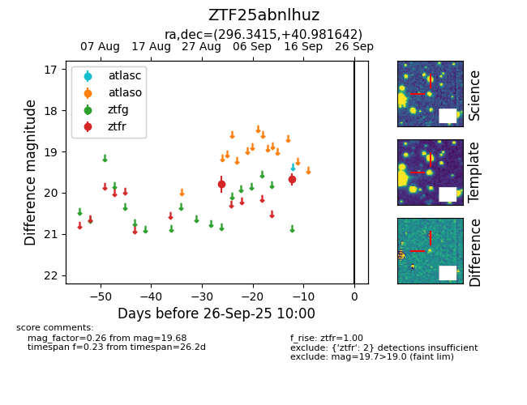

FINK: ZTF25abnlhuz
Lasair: ZTF25abnlhuz
ALeRCE: ZTF25abnlhuz
ZTF25abnlhuz (ztf,fink)
equatorial (ra, dec) = (296.3415,+40.98164)
galactic (l, b) = (75.0576,+8.18689)

last ztfr=19.68
2 ztfr detections